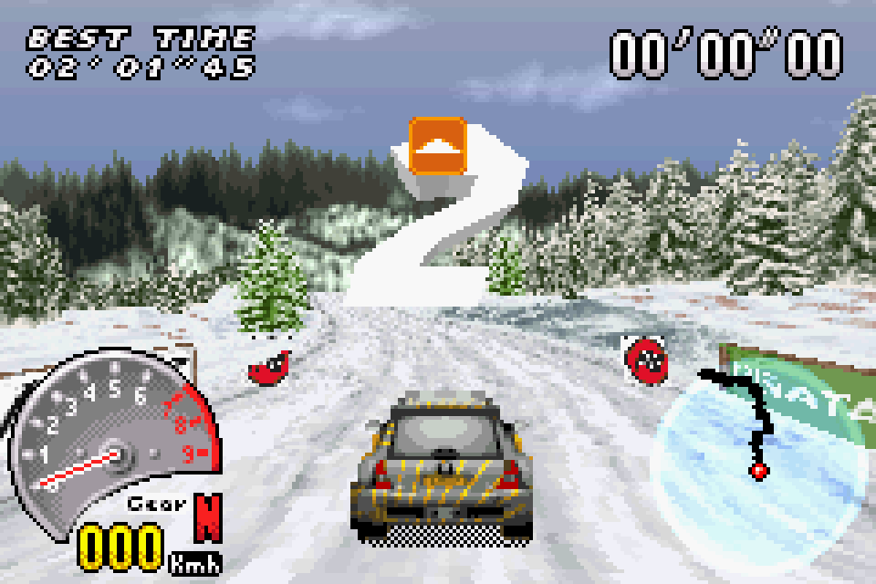
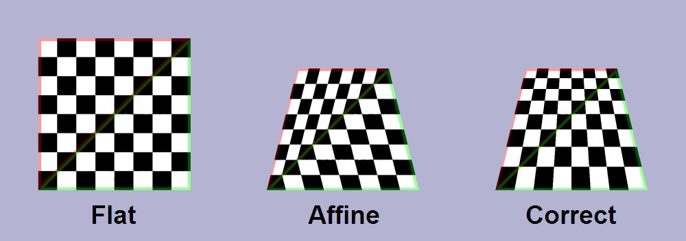

I/O 设备和计算机之间的边界逐渐模糊
DMA 不就是一个 “做一件特别事情” 的 CPU 吗
- 那么我们还可以有做各种事情的 “CPU” 啊
例如，显示图形
for (int i = 1; i <= H; i++) {
for (int j = 1; j <= W; j++)
putchar(j <= i ? '*' : ' ');
putchar('\n');
}
难办的是性能：NES: 6502 @ 1.79Mhz; IPC = 0.43
- 屏幕共有 256 x 240 = 61K 像素 (256 色)
- 60FPS → 每一帧必须在 ~10K 条指令内完成
- 如何在有限的 CPU 运算力下实现 60Hz？
NES Picture Processing Unit (PPU)
76543210
||||||||
||||||++- Palette
|||+++--- Unimplemented
||+------ Priority
|+------- Flip horizontally
+-------- Flip vertically
CPU 只
- 背景是 “大图” 的一部分
- 每行的前景块不超过 8 个
- PPU 完成图形的绘制
- 一个并行度更高的 “CPU”

更好的 2D 游戏引擎
如果我们有更多的晶体管？
- NES PPU 的本质是和坐标轴平行的 “贴块块”
- 实现上只需要加法和位运算
- 更强大的计算能力 = 更复杂的图形绘制
2D 图形加速硬件：图片的 “裁剪” + “拼贴”
- 支持旋转、材质映射 (缩放)、后处理、……
实现 3D
- 三维空间中的多边形，在视平面上也是多边形
- Thm. 任何 $n$ 边形都可以分解成 $n-2$ 个三角形
以假乱真的剪贴 3D
GameBoy Advance
- 4 层背景; 128 个剪贴 objects; 32 个 affine objects
- CPU 给出描述；GPU 绘制 (执行 “一个程序” 的 CPU)

但我们还是需要真正的 3D
三维空间中的三角形需要正确渲染
- 这时候建模的东西就多了
- 几何、材质、贴图、光源、……
- Rendering pipeline 里大部分操作都是 massive parallel 的

题外话：如此丰富的图形是怎么来的？
答案：全靠 PS (后处理)
例子：GLSL (Shading Language)
- 使 “shader program” 可以在 GPU 上执行
- 可以作用在各个渲染级别上：vertex, fragment, pixel shader
- 相当于一个 “PS” 程序，算出每个部分的光照变化
- 全局光照、反射、阴影、环境光遮罩……
现代 GPU: 一个通用计算设备
一个完整的众核多处理器系统
- 注重大量并行相似的任务
- 程序使用例如 OpenGL, CUDA, OpenCL, ... 书写
- 程序保存在内存 (显存) 中
- nvcc (LLVM) 分两个部分
- main 编译/链接成本地可执行的 ELF
- kernel 编译成 GPU 指令 (PTX; 送给驱动)
- 支持矩阵运算 (Tensor Cores)
- nvcc (LLVM) 分两个部分
- 数据也保存在内存 (显存) 中
- 可以输出到视频接口 (DP, HDMI, ...)
- 也可以通过 DMA 传回系统内存